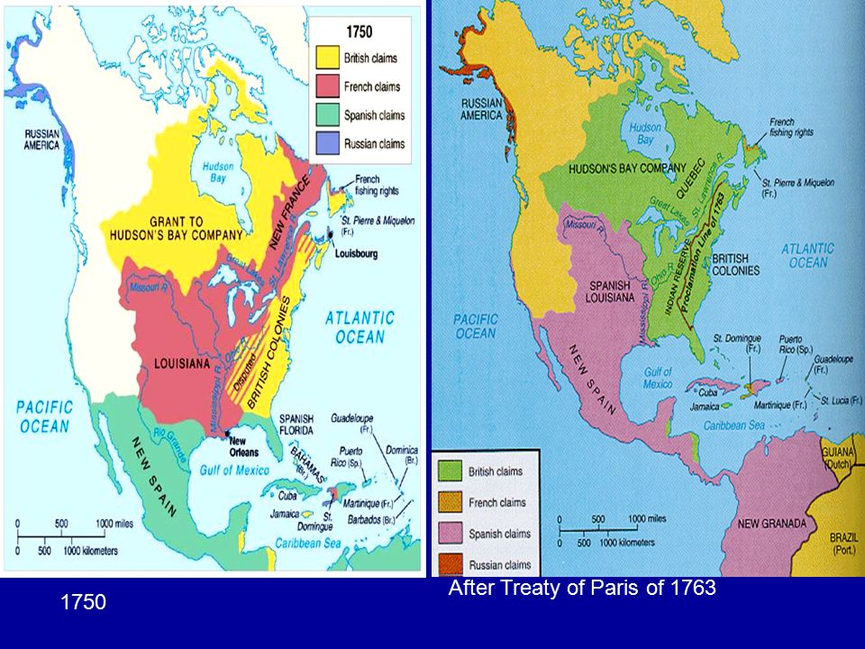

Canada is a country located in the northwestern hemisphere. It is part of the North American continent along with the United States, Mexico, the Caribbean Islands, and other countries. Canada is the second largest country in the world, right after Russia. It is made up of ten provinces and three territories. Canada is part of the 52-member Commonwealth. The Commonwealth is a group of countries who had been under British rule in the past.
Canada officially became a semi-independant country on July 1st, 1867, after remaining colonized for more than 250 years. Before Confederation, colonies, mainly from France and Great Britian, were established on present-day Canada. Colonization of North America started when Jacques Cartier of France declared the land as French territory in 1534. This lead to the creation of New France. The colony later spread, creating other colonies including Acadia (Nova Scotia and New Brunswick), Isle Saint-Jean (P.E.I), and Terre Neuve (Newfoundland). The Seven Years' War, which was fought between Great Britian and France, along with their many allies, changed the fate of colonies all over the world. This was fought between 1756 to 1763. After the Treaty of Paris was signed, almost all French colonies were given to the British. This meant that the British and Spanish had control of almost the entire North American continent, as seen in the map below.
The British made considerable changes to the boundries within Canada. New France was named Quebec, which was later divided into Upper Canada and Lower Canada in 1791. The Canadas were united in 1841, following a series of Rebellions. The next major shift in North America happened because of the American Revolution between 1775 and 1783. With this British rule of the 13 American colonies ended, and a new country was born. Though the war lasted until 1783, the United States Of America were founded in 1776. This was a major blow to the British, as they lost huge portions of land. The Americans were allied by the French, who were seeking revenge for their loss of New France. The Loyalists, who were loyal to Britian, had to escape to Quebec to avoid persecution from the Americans during the war. Press the "Post Revolution" button to see the land America claimed.
Since then, British North America continued to grow westward and northward. Central Canada kept on changing, until finally the Province Of Canada was created in 1841. The Province was divided into two areas: Canada East and Canada West. The final change to British North America occured in 1849. Some 18 years later, in 1867, the Dominion Of Canada was made. Canada West and Canada East became Ontario and Quebec respectively, and made up the Dominion along with New Brunswick and Nova Scotia.